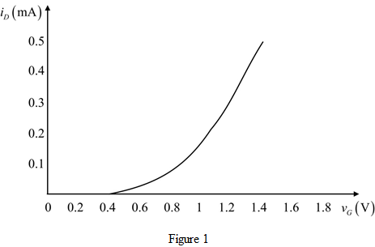

Step 1:
Refer to Figure P5.28 in the text book for the NMOS transistor circuit.
For , the NMOS transistor is in cut-off region and the current is zero.
Hence,
For ,  .
.
Thus, in the cut-off region, the expression for the current is, .
The NMOS transistor is in triode region for and the transistor is in the saturation region for .
The voltage is,
Substitute 1 V for  .
.
Step 2:
The NMOS transistor is in triode region for , hence,
Substitute 0.4 V for .
Thus, The NMOS transistor is in triode region for and the transistor is in saturation region for .
Step 3:
The formula for the drain current in the triode region is,
Here,
is the process trans conductance parameter.
is the width to length ratio of the channel.
is the gate-to-source voltage.
is the drain-to-source voltage.
is the threshold voltage.
Step 4:
The expression is written as,
Substitute for , 0 V for , 1 V for , and for  in the equation.
in the equation.
…… (1)
Thus, in the triode region, the expression for the current is, .
Step 5:
The formula for the drain current in the saturation region is,
Substitute for , 0 V for  , and for in the equation.
, and for in the equation.
…… (2)
Thus, in the triode region, the expression for the current is, .
In the saturation region the NMOS transistor acts a constant current source and the current is controlled by .
Step 6:
For

: cut-off region.
At ,
For : saturation region.
At ,
At  ,
,
Step 7:
Step 8:
Plot  versus as show in Figure 1.
versus as show in Figure 1.
